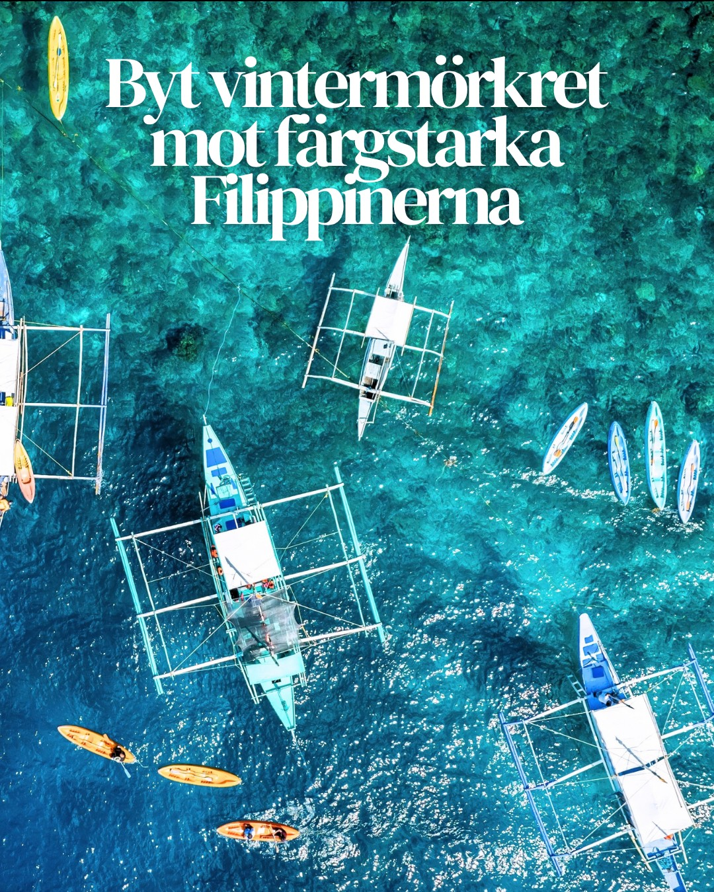
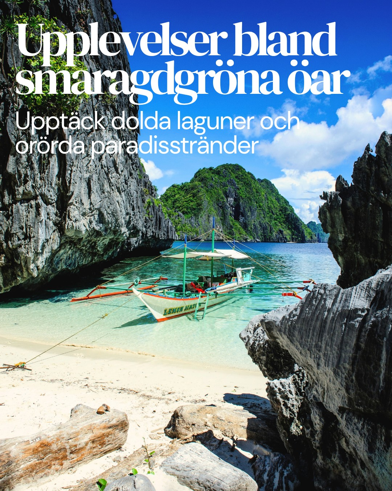
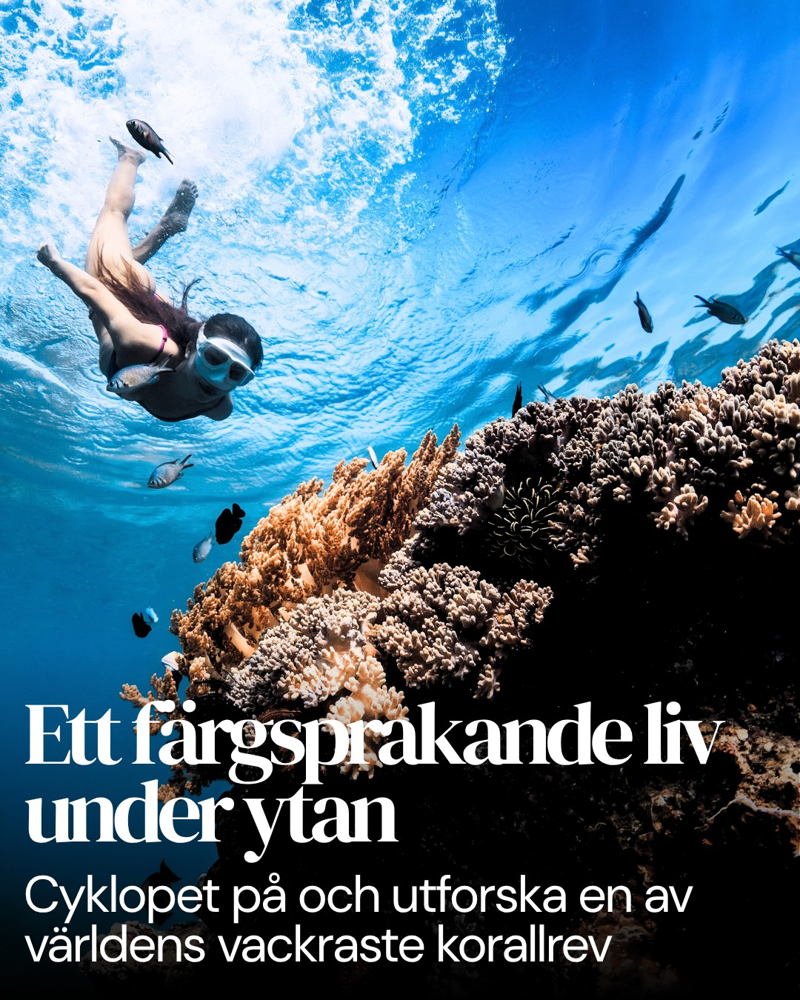
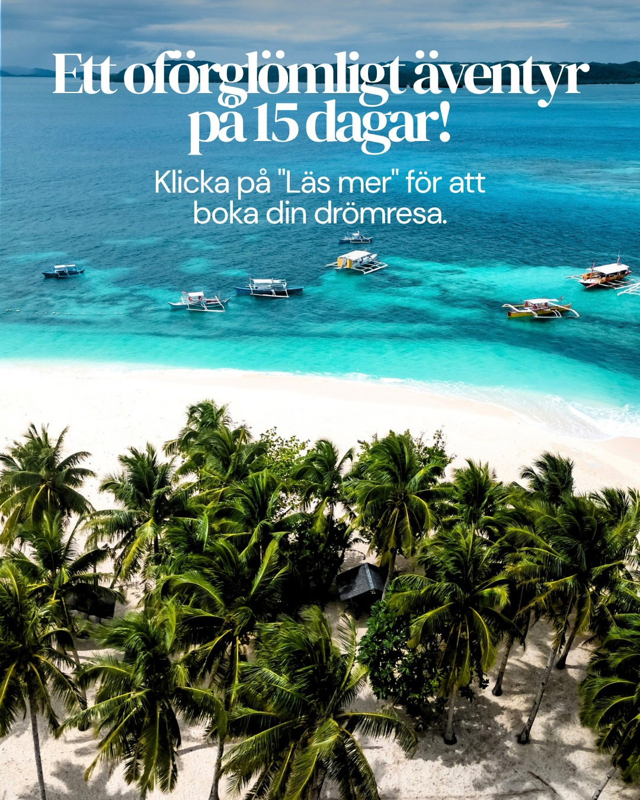

Karusell · Resmål
Längtan i fyra bilder.
En karusell som säljer en känsla innan den säljer en resa – från vintermörker till turkost vatten.
- Första bildenEn kontrast alla känner igen: mörkret hemma mot färgerna där borta.
- MittenTvå miljöer som visar bredden – öarna ovanför vattnet och livet under ytan.
- Sista bildenEtt tydligt nästa steg: vad resan innehåller och var man bokar.